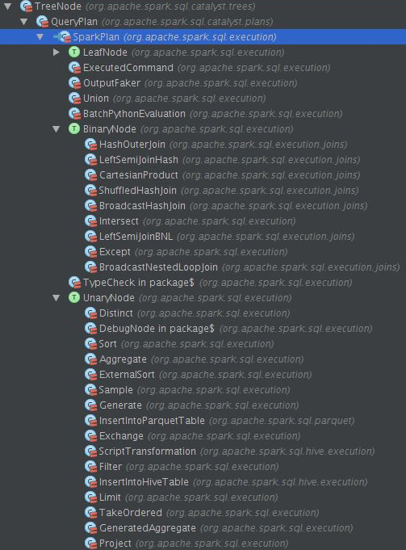

Physical Plan
物理计划是Spark SQL执行Spark job的前置，也是最后一道计划。
SparkPlanner
Optimizer接受输入的Analyzed Logical Plan后，会由SparkPlanner来对Optimized Logical Plan进行转换，生成Physical Plan。
protected abstract class QueryExecution {
lazy val analyzed = ExtractPythonUdfs(analyzer(logical))
lazy val withCachedData = useCachedData(analyzed)
lazy val optimizedPlan = optimizer(withCachedData)
lazy val sparkPlan = {
SparkPlan.currentContext.set(self)
planner(optimizedPlan).next()
}
...
}
SparkPlanner的apply方法，会返回一个Iterator[PhysicalPlan]。SparkPlanner继承了SparkStrategies，SparkStrategies继承了QueryPlanner。SparkStrategies包含了一系列特定的Strategies，这些Strategies是继承自QueryPlanner中定义的Strategy，它定义接受一个Logical Plan，生成一系列的Physical Plan。
protected[sql] class SparkPlanner extends SparkStrategies {
...
val strategies: Seq[Strategy] =
extraStrategies ++ (
CommandStrategy(self) ::
DataSourceStrategy ::
TakeOrdered ::
HashAggregation ::
LeftSemiJoin ::
HashJoin ::
InMemoryScans ::
ParquetOperations ::
BasicOperators ::
CartesianProduct ::
BroadcastNestedLoopJoin :: Nil)
...
}
QueryPlanner 是SparkPlanner的基类，定义了一系列的关键点，如Strategy，planLater和apply。
abstract class QueryPlanner[PhysicalPlan <: TreeNode[PhysicalPlan]] {
/** A list of execution strategies that can be used by the planner */
def strategies: Seq[GenericStrategy[PhysicalPlan]]
/**
* Returns a placeholder for a physical plan that executes `plan`. This placeholder will be
* filled in automatically by the QueryPlanner using the other execution strategies that are
* available.
*/
protected def planLater(plan: LogicalPlan) = apply(plan).next()
def apply(plan: LogicalPlan): Iterator[PhysicalPlan] = {
// Obviously a lot to do here still...
val iter = strategies.view.flatMap(_(plan)).toIterator
assert(iter.hasNext, s"No plan for $plan")
iter
}
}
prepareForExecution
Spark Plan是Catalyst里经过所有Strategies apply 的最终的物理执行计划的抽象类，它只是用来执行spark job的。
lazy val executedPlan: SparkPlan = prepareForExecution(sparkPlan)
prepareForExecution其实是一个RuleExecutor[SparkPlan]，当然这里的Rule就是SparkPlan了。
protected[sql] val prepareForExecution = new RuleExecutor[SparkPlan] {
val batches =
Batch("Add exchange", Once, AddExchange(self)) :: Nil
}
prepareForExecution里面只有一条规则：AddExchange。主要工作是检查是否有不匹配的partition类型，如果不兼容就增加一个Exchange节点，用来重新分区。
private[sql] case class AddExchange(sqlContext: SQLContext) extends Rule[SparkPlan] {
...
def apply(plan: SparkPlan): SparkPlan = plan.transformUp {
case operator: SparkPlan =>
// Check if every child's outputPartitioning satisfies the corresponding
// required data distribution.
def meetsRequirements =
!operator.requiredChildDistribution.zip(operator.children).map {
case (required, child) =>
val valid = child.outputPartitioning.satisfies(required)
logDebug(
s"${if (valid) "Valid" else "Invalid"} distribution," +
s"required: $required current: ${child.outputPartitioning}")
valid
}.exists(!_)
// Check if outputPartitionings of children are compatible with each other.
// It is possible that every child satisfies its required data distribution
// but two children have incompatible outputPartitionings. For example,
// A dataset is range partitioned by "a.asc" (RangePartitioning) and another
// dataset is hash partitioned by "a" (HashPartitioning). Tuples in these two
// datasets are both clustered by "a", but these two outputPartitionings are not
// compatible.
// TODO: ASSUMES TRANSITIVITY?
def compatible =
!operator.children
.map(_.outputPartitioning)
.sliding(2)
.map {
case Seq(a) => true
case Seq(a,b) => a compatibleWith b
}.exists(!_)
// Check if the partitioning we want to ensure is the same as the child's output
// partitioning. If so, we do not need to add the Exchange operator.
def addExchangeIfNecessary(partitioning: Partitioning, child: SparkPlan) =
if (child.outputPartitioning != partitioning) Exchange(partitioning, child) else child
if (meetsRequirements && compatible) {
operator
} else {
// At least one child does not satisfies its required data distribution or
// at least one child's outputPartitioning is not compatible with another child's
// outputPartitioning. In this case, we need to add Exchange operators.
val repartitionedChildren = operator.requiredChildDistribution.zip(operator.children).map {
case (AllTuples, child) =>
addExchangeIfNecessary(SinglePartition, child)
case (ClusteredDistribution(clustering), child) =>
addExchangeIfNecessary(HashPartitioning(clustering, numPartitions), child)
case (OrderedDistribution(ordering), child) =>
addExchangeIfNecessary(RangePartitioning(ordering, numPartitions), child)
case (UnspecifiedDistribution, child) => child
case (dist, _) => sys.error(s"Don't know how to ensure $dist")
}
operator.withNewChildren(repartitionedChildren)
}
}
}
Spark Plan
Spark Plan是SparkSQL中的Physical Plan。它继承自Query Plan[Spark Plan]，里面定义了partition，requiredChildDistribution以及spark sql启动执行的execute方法。
abstract class SparkPlan extends QueryPlan[SparkPlan] with Logging with Serializable {
self: Product =>
/** Specifies how data is partitioned across different nodes in the cluster. */
def outputPartitioning: Partitioning = UnknownPartitioning(0) // TODO: WRONG WIDTH!
/** Specifies any partition requirements on the input data for this operator. */
def requiredChildDistribution: Seq[Distribution] =
Seq.fill(children.size)(UnspecifiedDistribution)
/**
* Runs this query returning the result as an RDD.
*/
def execute(): RDD[Row]
...
}
目前SparkSQL中实现了一下十几种不同的Spark Plan，下面介绍几个比较重要的Spark Plan。

PhysicalRDD
当向SqlContext注册一个SchemaRDD时，就会生成一个PhysicalRDD，表示已经存在的RDD，不需要额外再去计算。
case class PhysicalRDD(output: Seq[Attribute], rdd: RDD[Row]) extends LeafNode {
override def execute() = rdd
}
InMemoryColumnarTableScan
当使用cache时，就用生成InMemoryColumnarTableScan，内存列存储就是在这个类里面实现的。
private[sql] case class InMemoryColumnarTableScan(
attributes: Seq[Attribute],
predicates: Seq[Expression],
relation: InMemoryRelation)
extends LeafNode {
...
}
ParquetTableScan
读取Parquet类型数据的实现。
case class ParquetTableScan(
attributes: Seq[Attribute],
relation: ParquetRelation,
columnPruningPred: Seq[Expression])
extends LeafNode {
...
}
CacheTableCommand
Cache的物理执行实现。
case class CacheTableCommand(
tableName: String,
plan: Option[LogicalPlan],
isLazy: Boolean)
extends LeafNode with Command {
override protected lazy val sideEffectResult = {
import sqlContext._
plan.foreach(_.registerTempTable(tableName))
cacheTable(tableName)
if (!isLazy) {
// Performs eager caching
table(tableName).count()
}
Seq.empty[Row]
}
override def output: Seq[Attribute] = Seq.empty
}
ExecutedCommand
执行传递进来的RunnableCommand，返回执行的结果。
case class ExecutedCommand(cmd: RunnableCommand) extends SparkPlan {
/**
* A concrete command should override this lazy field to wrap up any side effects caused by the
* command or any other computation that should be evaluated exactly once. The value of this field
* can be used as the contents of the corresponding RDD generated from the physical plan of this
* command.
*
* The `execute()` method of all the physical command classes should reference `sideEffectResult`
* so that the command can be executed eagerly right after the command query is created.
*/
protected[sql] lazy val sideEffectResult: Seq[Row] = cmd.run(sqlContext)
override def output = cmd.output
override def children = Nil
override def executeCollect(): Array[Row] = sideEffectResult.toArray
override def execute(): RDD[Row] = sqlContext.sparkContext.parallelize(sideEffectResult, 1)
}
HashJoin
Join操作主要包含BroadcastHashJoin、LeftSemiJoinHash、ShuffledHashJoin均实现了HashJoin这个trait。
HashJoin这个trait的主要成员有：
- buildSide是左连接还是右连接，有一种基准的意思。
- leftKeys是左孩子的expressions, rightKeys是右孩子的expressions。
- left是左孩子物理计划，right是右孩子物理计划。
- buildSideKeyGenerator是一个Projection是根据传入的Row对象来计算buildSide的Expression的。
- streamSideKeyGenerator是一个MutableProjection是根据传入的Row对象来计算streamSide的Expression的。
- 这里buildSide如果是left的话，可以理解为buildSide是左表，那么去连接这个左表的右表就是streamSide。
HashJoin关键的操作是joinIterators，简单来说就是join两个表，把每个表看着Iterators[Row]. 方式：
- 首先遍历buildSide，计算buildKeys然后利用一个HashMap，形成 (buildKeys, Iterators[Row])的格式。
- 遍历StreamedSide，计算streamedKey，去HashMap里面去匹配key，来进行join
- 最后生成一个joinRow，这个将两个row对接。
trait HashJoin {
self: SparkPlan =>
val leftKeys: Seq[Expression]
val rightKeys: Seq[Expression]
val buildSide: BuildSide
val left: SparkPlan
val right: SparkPlan
protected lazy val (buildPlan, streamedPlan) = buildSide match {
case BuildLeft => (left, right)
case BuildRight => (right, left)
}
protected lazy val (buildKeys, streamedKeys) = buildSide match {
case BuildLeft => (leftKeys, rightKeys)
case BuildRight => (rightKeys, leftKeys)
}
override def output = left.output ++ right.output
@transient protected lazy val buildSideKeyGenerator: Projection =
newProjection(buildKeys, buildPlan.output)
@transient protected lazy val streamSideKeyGenerator: () => MutableProjection =
newMutableProjection(streamedKeys, streamedPlan.output)
protected def hashJoin(streamIter: Iterator[Row], hashedRelation: HashedRelation): Iterator[Row] =
{
new Iterator[Row] {
//left数据的当前行
private[this] var currentStreamedRow: Row = _
//right中key等于当前left数据的所有行
private[this] var currentHashMatches: CompactBuffer[Row] = _
//currentHashMatches访问到的当前Index
private[this] var currentMatchPosition: Int = -1
// Mutable per row objects.
//使用mutable的row对象，减少GC压力
private[this] val joinRow = new JoinedRow2
private[this] val joinKeys = streamSideKeyGenerator()
//先访问currentHashMatches，如果currentHashMatches没有数据了，从stream中取下一个
override final def hasNext: Boolean =
(currentMatchPosition != -1 && currentMatchPosition < currentHashMatches.size) ||
(streamIter.hasNext && fetchNext())
//从currentHashMatches中取下一个
override final def next() = {
val ret = buildSide match {
case BuildRight => joinRow(currentStreamedRow, currentHashMatches(currentMatchPosition))
case BuildLeft => joinRow(currentHashMatches(currentMatchPosition), currentStreamedRow)
}
currentMatchPosition += 1
ret
}
private final def fetchNext(): Boolean = {
currentHashMatches = null
currentMatchPosition = -1
while (currentHashMatches == null && streamIter.hasNext) {
currentStreamedRow = streamIter.next() //从stream中取下一个
if (!joinKeys(currentStreamedRow).anyNull) {
//从hash map中取出所有key=joinKeys.currentValue的行
currentHashMatches = hashedRelation.get(joinKeys.currentValue)
}
}
if (currentHashMatches == null) {
false
} else {
currentMatchPosition = 0
true
}
}
}
}
}
HashOuterJoin
使用Shuffle+HashMap的方式进行Outer Join。具体步骤如下
- 调用zipPartitions将两个rdd对应的partition数据放到一起
- 在每个partition中，对两个数据分别建立两个HashMap
- 根据Outer Join的类型(left, right, full)，生成对应的iterator
case class HashOuterJoin(
leftKeys: Seq[Expression],
rightKeys: Seq[Expression],
joinType: JoinType,
condition: Option[Expression],
left: SparkPlan,
right: SparkPlan) extends BinaryNode {
...
override def execute() = {
left.execute().zipPartitions(right.execute()) { (leftIter, rightIter) =>
// TODO this probably can be replaced by external sort (sort merged join?)
// Build HashMap for current partition in left relation
val leftHashTable = buildHashTable(leftIter, newProjection(leftKeys, left.output))
// Build HashMap for current partition in right relation
val rightHashTable = buildHashTable(rightIter, newProjection(rightKeys, right.output))
val boundCondition =
condition.map(newPredicate(_, left.output ++ right.output)).getOrElse((row: Row) => true)
joinType match {
case LeftOuter => leftHashTable.keysIterator.flatMap { key =>
leftOuterIterator(key, leftHashTable.getOrElse(key, EMPTY_LIST),
rightHashTable.getOrElse(key, EMPTY_LIST))
}
case RightOuter => rightHashTable.keysIterator.flatMap { key =>
rightOuterIterator(key, leftHashTable.getOrElse(key, EMPTY_LIST),
rightHashTable.getOrElse(key, EMPTY_LIST))
}
case FullOuter => (leftHashTable.keySet ++ rightHashTable.keySet).iterator.flatMap { key =>
fullOuterIterator(key,
leftHashTable.getOrElse(key, EMPTY_LIST),
rightHashTable.getOrElse(key, EMPTY_LIST))
}
case x => throw new Exception(s"HashOuterJoin should not take $x as the JoinType")
}
}
}
}
LeftSemiJoinHash
将第二个表的join keys放到hash set中，遍历第一个表，从hash set中查找join key。
case class LeftSemiJoinHash(
leftKeys: Seq[Expression],
rightKeys: Seq[Expression],
left: SparkPlan,
right: SparkPlan) extends BinaryNode with HashJoin {
override val buildSide = BuildRight
override def requiredChildDistribution =
ClusteredDistribution(leftKeys) :: ClusteredDistribution(rightKeys) :: Nil
override def output = left.output
override def execute() = {
buildPlan.execute().zipPartitions(streamedPlan.execute()) { (buildIter, streamIter) =>
val hashSet = new java.util.HashSet[Row]()
var currentRow: Row = null
// Create a Hash set of buildKeys
while (buildIter.hasNext) {
currentRow = buildIter.next()
val rowKey = buildSideKeyGenerator(currentRow)
if (!rowKey.anyNull) {
val keyExists = hashSet.contains(rowKey)
if (!keyExists) {
hashSet.add(rowKey)
}
}
}
val joinKeys = streamSideKeyGenerator()
streamIter.filter(current => {
!joinKeys(current).anyNull && hashSet.contains(joinKeys.currentValue)
})
}
}
}
ShuffledHashJoin
先Shuffle数据，再通过hash join的方式实现inner join。
case class ShuffledHashJoin(
leftKeys: Seq[Expression],
rightKeys: Seq[Expression],
buildSide: BuildSide,
left: SparkPlan,
right: SparkPlan)
extends BinaryNode with HashJoin {
override def outputPartitioning: Partitioning = left.outputPartitioning
override def requiredChildDistribution =
ClusteredDistribution(leftKeys) :: ClusteredDistribution(rightKeys) :: Nil
override def execute() = {
buildPlan.execute().zipPartitions(streamedPlan.execute()) { (buildIter, streamIter) =>
val hashed = HashedRelation(buildIter, buildSideKeyGenerator)
hashJoin(streamIter, hashed)
}
}
}
BroadcastHashJoin
将其中一个数据broadcast出去，然后在另一个数据的每个partition进行hash join。
case class BroadcastHashJoin(
leftKeys: Seq[Expression],
rightKeys: Seq[Expression],
buildSide: BuildSide,
left: SparkPlan,
right: SparkPlan)
extends BinaryNode with HashJoin {
override def outputPartitioning: Partitioning = streamedPlan.outputPartitioning
override def requiredChildDistribution =
UnspecifiedDistribution :: UnspecifiedDistribution :: Nil
@transient
private val broadcastFuture = future {
// Note that we use .execute().collect() because we don't want to convert data to Scala types
val input: Array[Row] = buildPlan.execute().map(_.copy()).collect()
val hashed = HashedRelation(input.iterator, buildSideKeyGenerator, input.length)
sparkContext.broadcast(hashed)
}
override def execute() = {
val broadcastRelation = Await.result(broadcastFuture, 5.minute)
streamedPlan.execute().mapPartitions { streamedIter =>
hashJoin(streamedIter, broadcastRelation.value)
}
}
}
直接调用rdd函数
- Intersect：rdd.intersection
- Except：rdd.subtract
- Sample：rdd.sample
- TakeOrdered：rdd.takeOrdered
直接调用SparkContext的函数
- Union：sparkContext.union
在rdd.mapPartitions中进行简单计算
- Distinct：使用HashSet类
- Sort: 调用SeqLike的sort函数
- Filter：调用iterator的filter函数
- ExternalSorter：使用ExternalSorter类
- Project：调用iterator的filter函数
Strategies
下面来看一下在生成物理计划中使用到的十几种strategy。
CommandStrategy
CommandStrategy是专门针对Command类型的Logical Plan，即set key = value 、 explain sql、 cache table 这类操作
- RunnableCommand：执行继承自RunnableCommand的命令，并将Seq[Row]转化为RDD。
- SetCommand：设置SparkContext的参数
- ExplainCommand：利用executed Plan打印出tree string
- CacheTableCommand：将RDD以列式方式缓存到内存中
- UncacheTableCommand：将缓存的RDD清除
case class CommandStrategy(context: SQLContext) extends Strategy {
def apply(plan: LogicalPlan): Seq[SparkPlan] = plan match {
case r: RunnableCommand => ExecutedCommand(r) :: Nil
case logical.SetCommand(kv) =>
Seq(execution.SetCommand(kv, plan.output)(context))
case logical.ExplainCommand(logicalPlan, extended) =>
Seq(execution.ExplainCommand(logicalPlan, plan.output, extended)(context))
case logical.CacheTableCommand(tableName, optPlan, isLazy) =>
Seq(execution.CacheTableCommand(tableName, optPlan, isLazy))
case logical.UncacheTableCommand(tableName) =>
Seq(execution.UncacheTableCommand(tableName))
case _ => Nil
}
}
DataSourceStrategy
根据不同的BaseRelation生产不同的PhysicalRDD。支持4种BaseRelation:
- TableScan：默认的Scan策略
- PrunedScan：列裁剪，不需要的列不会从外部数据源加载
- PrunedFilterScan：在列裁剪的基础上加入Filter，在加载数据也的时候就进行过滤，而不是在客户端请求返回时做Filter
- CatalystScan：Catalyst的支持传入expressions来进行Scan，支持列裁剪和Filter。
private[sql] object DataSourceStrategy extends Strategy {
def apply(plan: LogicalPlan): Seq[SparkPlan] = plan match {
case PhysicalOperation(projectList, filters, l @ LogicalRelation(t: CatalystScan)) =>
pruneFilterProjectRaw(
l,
projectList,
filters,
(a, f) => t.buildScan(a, f)) :: Nil
case PhysicalOperation(projectList, filters, l @ LogicalRelation(t: PrunedFilteredScan)) =>
pruneFilterProject(
l,
projectList,
filters,
(a, f) => t.buildScan(a, f)) :: Nil
case PhysicalOperation(projectList, filters, l @ LogicalRelation(t: PrunedScan)) =>
pruneFilterProject(
l,
projectList,
filters,
(a, _) => t.buildScan(a)) :: Nil
case l @ LogicalRelation(t: TableScan) =>
execution.PhysicalRDD(l.output, t.buildScan()) :: Nil
case _ => Nil
}
...
}
TakeOrdered
如果有Limit和Sort操作将会使用TakeOrdered策略，返回一个TakeOrdered的Spark Plan。
object TakeOrdered extends Strategy {
def apply(plan: LogicalPlan): Seq[SparkPlan] = plan match {
case logical.Limit(IntegerLiteral(limit), logical.Sort(order, child)) =>
execution.TakeOrdered(limit, order, planLater(child)) :: Nil
case _ => Nil
}
}
HashAggregation
聚合操作可以映射为RDD的shuffle操作。
object HashAggregation extends Strategy {
def apply(plan: LogicalPlan): Seq[SparkPlan] = plan match {
// Aggregations that can be performed in two phases, before and after the shuffle.
// Cases where all aggregates can be codegened.
case PartialAggregation(
namedGroupingAttributes,
rewrittenAggregateExpressions,
groupingExpressions,
partialComputation,
child)
if canBeCodeGened(
allAggregates(partialComputation) ++
allAggregates(rewrittenAggregateExpressions)) &&
codegenEnabled =>
execution.GeneratedAggregate(
partial = false,
namedGroupingAttributes,
rewrittenAggregateExpressions,
execution.GeneratedAggregate(
partial = true,
groupingExpressions,
partialComputation,
planLater(child))) :: Nil
// Cases where some aggregate can not be codegened
case PartialAggregation(
namedGroupingAttributes,
rewrittenAggregateExpressions,
groupingExpressions,
partialComputation,
child) =>
execution.Aggregate(
partial = false,
namedGroupingAttributes,
rewrittenAggregateExpressions,
execution.Aggregate(
partial = true,
groupingExpressions,
partialComputation,
planLater(child))) :: Nil
case _ => Nil
}
...
}
LeftSemiJoin
如果Logical Plan里的Join是joinType为LeftSemi的话，就会执行这种策略，这里ExtractEquiJoinKeys是一个pattern定义在patterns.scala里，主要是做模式匹配用的。这里匹配只要是等值的join操作，都会封装为ExtractEquiJoinKeys对象，它会解析当前join，最后返回(joinType, rightKeys, leftKeys, condition, leftChild, rightChild)的格式。最后返回一个execution.LeftSemiJoinHash这个Spark Plan。
object LeftSemiJoin extends Strategy with PredicateHelper {
def apply(plan: LogicalPlan): Seq[SparkPlan] = plan match {
// Find left semi joins where at least some predicates can be evaluated by matching join keys
case ExtractEquiJoinKeys(LeftSemi, leftKeys, rightKeys, condition, left, right) =>
val semiJoin = joins.LeftSemiJoinHash(
leftKeys, rightKeys, planLater(left), planLater(right))
condition.map(Filter(_, semiJoin)).getOrElse(semiJoin) :: Nil
// no predicate can be evaluated by matching hash keys
case logical.Join(left, right, LeftSemi, condition) =>
joins.LeftSemiJoinBNL(planLater(left), planLater(right), condition) :: Nil
case _ => Nil
}
}
HashJoin
HashJoin是我们最见的操作，innerJoin类型，里面提供了2种Spark Plan：BroadcastHashJoin 和 ShuffledHashJoin。 BroadcastHashJoin的实现是一种广播变量的实现方法，如果设置了spark.sql.join.broadcastTables这个参数的表就会用spark的Broadcast Variables方式先将一张表给查询出来，然后广播到各个机器中。ShuffledHashJoin是一种最传统的默认的join方式，会根据shuffle key进行shuffle的hash join。
object HashJoin extends Strategy with PredicateHelper {
private[this] def makeBroadcastHashJoin(
leftKeys: Seq[Expression],
rightKeys: Seq[Expression],
left: LogicalPlan,
right: LogicalPlan,
condition: Option[Expression],
side: joins.BuildSide) = {
val broadcastHashJoin = execution.joins.BroadcastHashJoin(
leftKeys, rightKeys, side, planLater(left), planLater(right))
condition.map(Filter(_, broadcastHashJoin)).getOrElse(broadcastHashJoin) :: Nil
}
def apply(plan: LogicalPlan): Seq[SparkPlan] = plan match {
case ExtractEquiJoinKeys(Inner, leftKeys, rightKeys, condition, left, right)
if sqlContext.autoBroadcastJoinThreshold > 0 &&
right.statistics.sizeInBytes <= sqlContext.autoBroadcastJoinThreshold =>
makeBroadcastHashJoin(leftKeys, rightKeys, left, right, condition, joins.BuildRight)
case ExtractEquiJoinKeys(Inner, leftKeys, rightKeys, condition, left, right)
if sqlContext.autoBroadcastJoinThreshold > 0 &&
left.statistics.sizeInBytes <= sqlContext.autoBroadcastJoinThreshold =>
makeBroadcastHashJoin(leftKeys, rightKeys, left, right, condition, joins.BuildLeft)
case ExtractEquiJoinKeys(Inner, leftKeys, rightKeys, condition, left, right) =>
val buildSide =
if (right.statistics.sizeInBytes <= left.statistics.sizeInBytes) {
joins.BuildRight
} else {
joins.BuildLeft
}
val hashJoin = joins.ShuffledHashJoin(
leftKeys, rightKeys, buildSide, planLater(left), planLater(right))
condition.map(Filter(_, hashJoin)).getOrElse(hashJoin) :: Nil
case ExtractEquiJoinKeys(joinType, leftKeys, rightKeys, condition, left, right) =>
joins.HashOuterJoin(
leftKeys, rightKeys, joinType, condition, planLater(left), planLater(right)) :: Nil
case _ => Nil
}
}
InMemoryScans
InMemoryScans主要是对InMemoryRelation这个Logical Plan操作。调用的其实是Spark Planner里的pruneFilterProject这个方法。
object InMemoryScans extends Strategy {
def apply(plan: LogicalPlan): Seq[SparkPlan] = plan match {
case PhysicalOperation(projectList, filters, mem: InMemoryRelation) =>
pruneFilterProject(
projectList,
filters,
identity[Seq[Expression]], // All filters still need to be evaluated.
InMemoryColumnarTableScan(_, filters, mem)) :: Nil
case _ => Nil
}
}
ParquetOperations
支持ParquetOperations的读写，插入Table等。
object ParquetOperations extends Strategy {
def apply(plan: LogicalPlan): Seq[SparkPlan] = plan match {
// TODO: need to support writing to other types of files. Unify the below code paths.
case logical.WriteToFile(path, child) =>
val relation =
ParquetRelation.create(path, child, sparkContext.hadoopConfiguration, sqlContext)
// Note: overwrite=false because otherwise the metadata we just created will be deleted
InsertIntoParquetTable(relation, planLater(child), overwrite = false) :: Nil
case logical.InsertIntoTable(table: ParquetRelation, partition, child, overwrite) =>
InsertIntoParquetTable(table, planLater(child), overwrite) :: Nil
case PhysicalOperation(projectList, filters: Seq[Expression], relation: ParquetRelation) =>
val prunePushedDownFilters =
if (sqlContext.parquetFilterPushDown) {
(predicates: Seq[Expression]) => {
// Note: filters cannot be pushed down to Parquet if they contain more complex
// expressions than simple "Attribute cmp Literal" comparisons. Here we remove all
// filters that have been pushed down. Note that a predicate such as "(A AND B) OR C"
// can result in "A OR C" being pushed down. Here we are conservative in the sense
// that even if "A" was pushed and we check for "A AND B" we still want to keep
// "A AND B" in the higher-level filter, not just "B".
predicates.map(p => p -> ParquetFilters.createFilter(p)).collect {
case (predicate, None) => predicate
}
}
} else {
identity[Seq[Expression]] _
}
pruneFilterProject(
projectList,
filters,
prunePushedDownFilters,
ParquetTableScan(
_,
relation,
if (sqlContext.parquetFilterPushDown) filters else Nil)) :: Nil
case _ => Nil
}
}
BasicOperators
所有定义在org.apache.spark.sql.execution里的基本的Spark Plan，它们都在org.apache.spark.sql.execution包下basicOperators.scala内。有Project、Filter、Sample、Union、Limit、TakeOrdered、Sort、ExistingRdd。这些是基本元素，实现都相对简单，基本上都是RDD里的方法来实现的。
// Can we automate these 'pass through' operations?
object BasicOperators extends Strategy {
def numPartitions = self.numPartitions
def apply(plan: LogicalPlan): Seq[SparkPlan] = plan match {
case logical.Distinct(child) =>
execution.Distinct(partial = false,
execution.Distinct(partial = true, planLater(child))) :: Nil
case logical.Sort(sortExprs, child) if sqlContext.externalSortEnabled =>
execution.ExternalSort(sortExprs, global = true, planLater(child)):: Nil
case logical.Sort(sortExprs, child) =>
execution.Sort(sortExprs, global = true, planLater(child)):: Nil
case logical.SortPartitions(sortExprs, child) =>
// This sort only sorts tuples within a partition. Its requiredDistribution will be
// an UnspecifiedDistribution.
execution.Sort(sortExprs, global = false, planLater(child)) :: Nil
case logical.Project(projectList, child) =>
execution.Project(projectList, planLater(child)) :: Nil
case logical.Filter(condition, child) =>
execution.Filter(condition, planLater(child)) :: Nil
case logical.Aggregate(group, agg, child) =>
execution.Aggregate(partial = false, group, agg, planLater(child)) :: Nil
case logical.Sample(fraction, withReplacement, seed, child) =>
execution.Sample(fraction, withReplacement, seed, planLater(child)) :: Nil
case SparkLogicalPlan(alreadyPlanned) => alreadyPlanned :: Nil
case logical.LocalRelation(output, data) =>
val nPartitions = if (data.isEmpty) 1 else numPartitions
PhysicalRDD(
output,
RDDConversions.productToRowRdd(sparkContext.parallelize(data, nPartitions),
StructType.fromAttributes(output))) :: Nil
case logical.Limit(IntegerLiteral(limit), child) =>
execution.Limit(limit, planLater(child)) :: Nil
case Unions(unionChildren) =>
execution.Union(unionChildren.map(planLater)) :: Nil
case logical.Except(left, right) =>
execution.Except(planLater(left), planLater(right)) :: Nil
case logical.Intersect(left, right) =>
execution.Intersect(planLater(left), planLater(right)) :: Nil
case logical.Generate(generator, join, outer, _, child) =>
execution.Generate(generator, join = join, outer = outer, planLater(child)) :: Nil
case logical.NoRelation =>
execution.PhysicalRDD(Nil, singleRowRdd) :: Nil
case logical.Repartition(expressions, child) =>
execution.Exchange(HashPartitioning(expressions, numPartitions), planLater(child)) :: Nil
case e @ EvaluatePython(udf, child, _) =>
BatchPythonEvaluation(udf, e.output, planLater(child)) :: Nil
case LogicalRDD(output, rdd) => PhysicalRDD(output, rdd) :: Nil
case _ => Nil
}
}
CartesianProduct
笛卡尔积的Join，有待过滤条件的Join。主要是利用RDD的cartesian实现的。
object CartesianProduct extends Strategy {
def apply(plan: LogicalPlan): Seq[SparkPlan] = plan match {
case logical.Join(left, right, _, None) =>
execution.joins.CartesianProduct(planLater(left), planLater(right)) :: Nil
case logical.Join(left, right, Inner, Some(condition)) =>
execution.Filter(condition,
execution.joins.CartesianProduct(planLater(left), planLater(right))) :: Nil
case _ => Nil
}
}
BroadcastNestedLoopJoin
BroadcastNestedLoopJoin可用于Left Outer， Right Outer， Full Outer这三种类型的join，Hash Join仅仅用于InnerJoin。
object BroadcastNestedLoopJoin extends Strategy {
def apply(plan: LogicalPlan): Seq[SparkPlan] = plan match {
case logical.Join(left, right, joinType, condition) =>
val buildSide =
if (right.statistics.sizeInBytes <= left.statistics.sizeInBytes) {
joins.BuildRight
} else {
joins.BuildLeft
}
joins.BroadcastNestedLoopJoin(
planLater(left), planLater(right), buildSide, joinType, condition) :: Nil
case _ => Nil
}
}